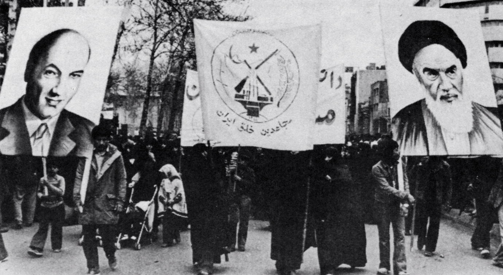

Published January 28, 2026

In 1953, a covert CIA and MI6-backed operation fomented a coup d'état which overthrew Iran's democratically elected Prime Minister, Mohammad Mosaddegh. The coup aimed to reverse the nationalisation of the British-controlled oil industry.
Power was consolidated instead under Shah Mohammad Reza Pahlavi, whose reign was politically insulated by the West and lasted a quarter of a century.
By the mid-1970s the regime looked invulnerable — a showroom of Westernisation in a region of instability. Yet underneath it all there was an uneasiness which was soon to erupt.
In the 1960s, a sociologist called Ali Shariati had returned from Paris, electrified by existentialist philosophy. He was dissatisfied with the Shah but the puzzle was how to resist in a Shiite Islamic country.
Shiite Islam had a quietist attitude towards politics. One of its main ceremonies is "Shiite lamentation", where the faithful ritually flagellate themselves.
Drawing from contemporary French philosophy, Shariati began to argue that Shi’ism was, at its core, a theology of revolt. He fused Frantz Fanon with Shi’i symbolism, so that Marxist terms like "the oppressors" became "the arrogant", while "the oppressed" became "the weak" or "the disinherited".
For this he was harassed, imprisoned, and eventually forced into exile. He died in 1977 in Britain under circumstances that remain contested. But by then the fuse had been lit. His ideas had circulated in mimeographed copies, cassette tapes and whispers.
In early 1979, the Ayatollah Khomeini led a revolution that toppled the Shah in Iran. Khomeini lifted a lot from Shariati, and in 1970 he gave a series of lectures that took Shariati's attempt to fuse revolutionary Marxism and Islam and used them to portray a new vision of Shia Islam.
Your duty, Khomeini said, was no longer to remain passive but to seize power and drive out the wicked and corrupt ruler. This language of sacrifice, authenticity, and resistance continues to saturate politics in the Islamic Republic. The mood remains that a society humiliated by foreign interference must rediscover dignity through struggle.
Another French philosopher, however, called Cécile Fabre, has recently called into question this very basis for Shariati’s project. In only 9 pages, Fabre purports to make the case for foreign electoral subversion.
Citing examples such as the likelihood that without US-driven assistance, the Democratic Opposition of Serbia would have lost the 2000 Yugoslavian presidential election to Slobodan Milošević, she concludes that electoral subversion may ‘sometimes be justified, so long as it is a proportionate response.’
Of course, philosophy is there to ask the questions no one wants to. But papers like this are hardly being talked about in the open. They are being taught to PPE students who later make decisions on our behalf about events like we see today. Fabre is therefore worth a read so the rest of us can understand why some still feel it justified to meddle in the politics of other countries, long after its failures have been evident in country after country.